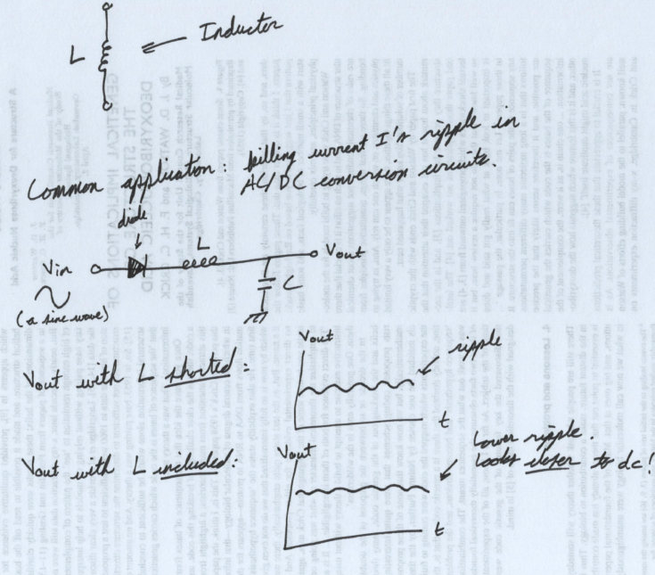

Analog Circuits

Lesson 4: Inductors
Okay, the derivation for inductance is a little bit more complicated than for resistance and capacitance. I'll have to ask you to take two definitions as given. I'd like to take you through all the electromagnetics behind these definitions, but it would be overkill to do that here.
The inductance \( L \) of an inductor is defined as
\( L = \frac{N \Phi_B}{I} \),
where \( N \) is the number of turns in the inductor, \( \Phi_B \) is the amount of magnetic flux flowing through the inductor, and \( I \) is the current flowing through the inductor. The only thing you need to know about magnetic flux is: it induces a voltage across the inductor.
We can use Lenz's Law to figure out what the voltage drop across the inductor is. Usually there's a minus sign here because of magnetic induction. Since we usually define current flow from the positive terminal to the negative terminal, we cancel the negative sign out. We get this equation from Lenz's Law and that cancellation:
\( V = \frac{d(N \Phi_B)}{dt} \).
for Lenz's Law. There was a ton of hand-waving there. You'll see a "more realistic" derivation in your introductory electromagnetics/optics course (University Physics II in most universities).
Now if you solve for the \( N \Phi_B \) term in the inductance equation, then substitute that into Lenz's Law, you get
\( V = L \frac{dI}{dt} \),
where we assumed the inductance \( L \) to be constant. Like with capacitors, we can get away with this because most inductances are effectively constant for most applications. (When you work at high enough frequencies, this is no longer the case. You'll run into parasitic elements at that point.)
Again, you're probably not going to use the equation in this form. Just understand how it's defined, and you should be okay. You'll use complex numbers to do the actual calculations.
(If you're really into power electronics, you'll spend a lot more time with these equations in "Advanced Transient Analysis" courses.)
Like we saw for capacitors, you can rearrange the voltage equation above to find the current:
\( I = \frac{1}{L} \int_{0}^{\infty} V(t) dt + I(0) \).
As before, \( I(0) \) is the initial current you're given through the inductor.
Say you flicked a switch on for a while, then turned it off. What's the current through the inductor a long time after the switch was turned off? You need that initial condition. It tells you how long it will take for all the current in the inductor to go to zero after turning off the switch.
You'll probably use the equations for the same purposes as the capacitor equations. Again, you'll probably never use these equations in this specific form, because we can replace the time derivatives with some complex number algebra.
Bottom line. For an inductor, \( V = L \frac{dI}{dt} \) and \( I = \frac{1}{L} \int_{0}^{\infty} V(t) dt + I(0) \).